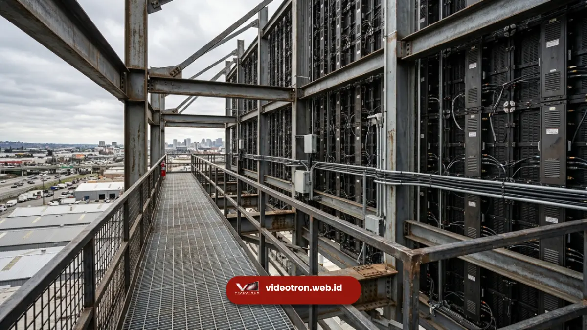

Metode maintenance belakang adalah sistem perawatan videotron di mana teknisi mengakses bagian belakang rangka melalui ruang servis khusus untuk melakukan perbaikan tanpa melepas panel dari sisi depan.
Metode ini menjadi pilihan umum untuk videotron pada struktur billboard mandiri yang memiliki ruang kosong di balik layar.
Poin Penting:
- Maintenance belakang memungkinkan teknisi bekerja tanpa mengganggu tampilan visual di sisi depan layar.
- Metode ini memerlukan ruang servis dengan jarak tertentu di belakang struktur rangka videotron.
- Struktur billboard mandiri umumnya memiliki ruang belakang yang cukup untuk akses servis rutin.
- Kabinet magnesium alloy mendukung efisiensi rangka penyangga karena bobotnya yang ringan.
- Proses perbaikan dapat dilakukan tanpa mengganggu operasional tampilan videotron di bagian depan.
- Apa Itu Maintenance Akses Belakang pada Videotron?
- Mengapa Billboard Mandiri Cocok dengan Metode Maintenance Belakang?
- Apa Kelebihan Sistem Rear Service Dibanding Front Service?
- Apa Faktor yang Perlu Diperhatikan pada Struktur Rangka?
- Bagaimana Proses Perawatan Rutin dengan Metode Belakang Dilakukan?
Apa Itu Maintenance Akses Belakang pada Videotron?
Maintenance akses belakang, atau dikenal dengan istilah rear service, adalah metode perawatan videotron yang memungkinkan teknisi mengakses komponen internal panel melalui ruang servis di belakang struktur rangka.
Berbeda dengan metode depan, sistem ini tidak memerlukan pelepasan modul dari sisi permukaan layar.
Pada metode ini, teknisi masuk melalui pintu akses atau ruang servis yang dirancang khusus di belakang videotron, kemudian melakukan pemeriksaan, penggantian komponen, atau perbaikan kabel langsung dari balik panel. Tampilan visual di sisi depan layar tetap utuh selama proses perawatan berlangsung.
Metode ini umumnya diterapkan pada struktur videotron yang berdiri sendiri (freestanding), seperti billboard atau videotron dengan rangka penyangga terpisah dari dinding bangunan, di mana ruang kosong di belakang layar tersedia secara alami akibat desain strukturnya.
Mengapa Billboard Mandiri Cocok dengan Metode Maintenance Belakang?
Billboard mandiri cocok dengan metode maintenance belakang karena struktur rangkanya yang berdiri sendiri secara alami menyediakan ruang kosong di belakang layar untuk akses servis teknisi.
Berbeda dengan videotron yang menempel pada dinding, billboard mandiri dibangun dengan struktur rangka baja yang berdiri terpisah dari bangunan lain.
Desain ini menghasilkan celah di belakang panel videotron yang dapat difungsikan sebagai jalur akses maintenance.
Ruang ini memungkinkan teknisi bergerak leluasa untuk melakukan inspeksi rutin tanpa perlu melepas satu pun modul dari sisi depan.
Selain itu, billboard mandiri umumnya berukuran besar dan ditempatkan pada lokasi strategis yang membutuhkan waktu operasional tinggi.
Metode maintenance belakang memungkinkan perawatan dilakukan kapan saja tanpa mengganggu tampilan konten yang sedang ditayangkan di sisi depan, sehingga cocok untuk kebutuhan operasional videotron komersial jangka panjang.
Apa Kelebihan Sistem Rear Service Dibanding Front Service?
Kelebihan utama sistem rear service dibanding front service adalah kemampuan melakukan perawatan tanpa mengganggu tampilan visual layar serta akses yang lebih leluasa untuk pemeriksaan menyeluruh komponen internal.
Beberapa kelebihan metode maintenance belakang meliputi:
- Tampilan visual tetap utuh: proses perbaikan dilakukan dari balik panel sehingga konten yang ditayangkan tidak terganggu selama perawatan berlangsung.
- Akses pemeriksaan lebih menyeluruh: teknisi dapat memeriksa kabel, power supply, dan sistem kontrol secara langsung tanpa membongkar modul depan.
- Cocok untuk perawatan berskala besar: struktur billboard mandiri dengan ruang belakang luas memudahkan penanganan beberapa modul sekaligus dalam satu waktu.
- Minim risiko kerusakan permukaan panel: karena modul tidak perlu dilepas dari sisi depan, risiko goresan atau kerusakan permukaan layar dapat diminimalkan.
Metode ini secara umum lebih banyak diterapkan pada proyek videotron skala besar dengan struktur rangka independen, mengingat kebutuhan ruang belakang yang memadai menjadi faktor penentu kelayakan metode ini.

Teknisi melakukan perbaikan videotron dari akses belakang struktur.Apa Faktor yang Perlu Diperhatikan pada Struktur Rangka untuk Maintenance Belakang?
Faktor yang perlu diperhatikan pada struktur rangka untuk maintenance belakang meliputi lebar ruang servis, kekuatan rangka penyangga, dan aksesibilitas jalur masuk teknisi.
Lebar ruang servis idealnya cukup untuk pergerakan teknisi secara aman, termasuk membawa peralatan perbaikan yang diperlukan.
Kekuatan rangka penyangga juga perlu mempertimbangkan bobot total kabinet videotron; penggunaan kabinet magnesium alloy yang ringan dapat membantu mengurangi beban pada struktur rangka sekaligus mempermudah desain ruang servis yang lebih efisien.
Selain itu, jalur akses masuk ke ruang belakang perlu dirancang dengan mempertimbangkan aspek keselamatan kerja, termasuk sistem penerangan dan ventilasi yang memadai.
Bagaimana Proses Perawatan Rutin dengan Metode Belakang Dilakukan?
Proses perawatan rutin dengan metode belakang umumnya melibatkan pemeriksaan berkala komponen internal, pembersihan sistem ventilasi, serta penggantian komponen yang mengalami penurunan performa tanpa melepas panel dari sisi depan.
Tahapan umum meliputi teknisi masuk melalui pintu akses ruang servis, melakukan inspeksi visual pada kabel dan konektor, memeriksa kondisi power supply serta sistem kontrol, membersihkan debu pada ventilasi kabinet, hingga mengganti komponen yang diperlukan.
Seluruh proses ini dapat dilakukan tanpa memengaruhi tampilan konten yang sedang berjalan di layar depan videotron.
Metode maintenance belakang menjadi pilihan yang relevan untuk videotron dengan struktur billboard mandiri, karena ruang belakang yang tersedia secara alami memungkinkan perawatan menyeluruh tanpa mengganggu tampilan visual di sisi depan.
Kombinasi metode ini dengan kabinet magnesium alloy yang ringan turut mendukung efisiensi desain rangka penyangga struktur billboard.
Ingin memastikan struktur billboard Anda kompatibel dengan metode maintenance belakang? Konsultasikan kebutuhan proyek Anda bersama tim teknis kami untuk mendapatkan solusi videotron yang sesuai.

Hawa Nadira
LED Technology Consultant dan Visual Educator
Konsultan dan spesialis solusi display digital berdedikasi tinggi yang fokus membagikan panduan edukatif mengenai penerapan teknologi layar LED videotron untuk kebutuhan interior modern di Indonesia.